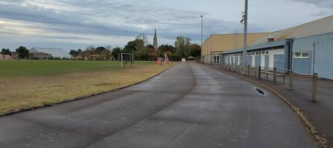
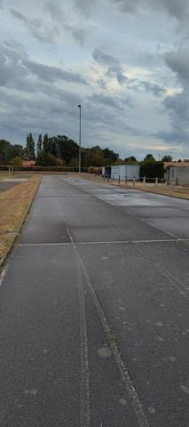
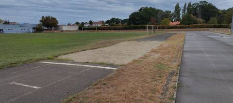
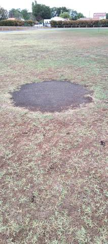

{kind=link}
{kind=link}
{kind=link}
{kind=link}
Une très vieille piste, et ça se voit d'abord sous les pieds : le goudron est abîmé, les joints de l'enrobé sont ouverts, la mousse a pris dans les fissures et le marquage a pâli. C'est pourtant une grande piste, avec six couloirs tracés tout autour et de longues lignes droites, assez pour du 110 m haies. Le sautoir en longueur m'a semblé exploitable, sable en place et planche lisible, et on retrouve le cercle de lancer du poids au milieu de la pelouse : historiquement, il devait s'y faire de la course, de la longueur et du poids, et c'est resté à peu près ça. Un tour au couloir 1 m'a donné environ 410 m à la montre, sans que je puisse affirmer que l'anneau ne fait pas 400 m pile. Accès libre le soir de ma visite, rien à franchir. Pour un footing ou du fractionné sans exigence de chrono, la place ne manque pas et ça fait le travail ; pour de la vitesse, des haies ou du travail de pied, l'état du revêtement se paie, et c'est ce qui me fait mettre 2 plutôt que 3.
Complexe Sportif Gauvrit
Avenue des Sports, 44680 Sainte-Pazanne · Loire-Atlantique
Complexe Sportif Gauvrit est un équipement d'athlétisme situé à Sainte-Pazanne (Loire-Atlantique), en Pays de la Loire. Il dispose d'une piste de 400 m en bitume / goudron, à 6 couloirs. On y trouve sautoir longueur et lancer du poids. Le site propose l'éclairage, des vestiaires et des douches. L'accès est libre.
Photos




Les sautoirs et les aires de lancer sont ce que la donnée publique décrit le plus mal, et ce qu'on photographie le moins. Un gros plan du sol, une perche bâchée, un bac de sable envahi : chacun ajoute ce qu'aucun champ ne porte.
Envoyer une photoSans compte GitHubPiste
- Revêtement
- Bitume / goudron
- Développement
- 400 m
- Type de piste
- Anneau de stade d'athlétisme
- Couloirs
- 6
- Configuration
- Plein air
Agrès recensés
- Sautoir longueur
- Lancer du poids
Accès & services
- Accès libre
- Oui
- Éclairage
- Oui
- Vestiaires
- Oui
- Douches
- Oui
- Sanitaires
- Oui
Visite du 23 août 2026 en soirée : on entre sans rien franchir, aucun portail ni grillage à contourner, alors que le recensement déclare l'équipement en accès non libre. Aucun panneau d'horaires ni de règlement n'a été vu à l'entrée, et rien n'affiche de créneaux réservés à un club ou aux scolaires : l'accès constaté ce soir-là ne garantit donc pas qu'il en aille de même en journée ou pendant les créneaux d'utilisation. Vestiaires et sanitaires ont été trouvés accessibles ce soir-là. Les douches, déclarées au recensement, n'ont pas été vérifiées.
Avis des athlètes
Visite sur place le 23 août 2026, en soirée. Revêtement confirmé au sol : bitume, et non un synthétique — l'anneau est un enrobé routier gris, foulé sur toute la longueur de la ligne droite. C'est une piste ancienne, et le goudron est abîmé : joints longitudinaux ouverts entre les bandes d'enrobé, fissures qui filent sur plusieurs mètres, mousse et touffes d'herbe installées dans les fentes, plaques de ragréage plus sombres, marquage blanc très pâli par endroits. La piste reste courable partout, mais elle n'est plus plane. Les six couloirs sont tracés, et tracés tout autour de l'anneau, virages compris — le recensement ne renseigne aucun nombre de couloirs pour ce site. C'est une grande piste : les lignes droites sont assez longues pour du 110 m haies, sans qu'aucun repère ni marquage de haies n'ait été vu au sol, et sans qu'il existe de ligne droite distincte de l'anneau. L'anneau est en plein air, autour d'un terrain de football en herbe qui reste tondu et entretenu ; des bancs sont alignés le long du gymnase côté ligne droite, mais il n'y a pas de tribune. Des mâts d'éclairage sont en place le long de la piste, conformes à ce que déclare le recensement ; ils n'ont pas été vus allumés. Sur le développement, le doute n'est pas levé et la fiche conserve les 400 m déclarés au recensement. Un tour effectué au couloir 1 le jour de la visite a été mesuré à environ 410 m par une montre GPS. Ce n'est pas une raison suffisante pour renverser la donnée déclarée : une montre GPS portée au poignet sur-mesure systématiquement sur un anneau, et sur les pistes de Loire-Atlantique que le ministère donne à 400 m et qu'OpenStreetMap trace correctement, les périmètres relevés vont de 410 à 414 m (Clisson, Vertou, Derval) sans que le développement réel soit en cause. La lice est ici un caniveau béton : courir sur le bitume à côté de la bordure plutôt qu'à 30 cm d'elle suffit à ajouter environ 2 m par tour. Une mesure au décamètre en couloir 1, à 30 cm de la bordure, reste donc à faire avant de trancher entre 400 et 410 m. OpenStreetMap ne trace pas cet anneau, et n'offre aucune estimation indépendante. Deux agrès ont été vus, et deux seulement. Le sautoir en longueur est exploitable : piste d'élan en enrobé, zone d'appel marquée d'une ligne blanche peinte au sol, fosse de sable large, sable présent et planche lisible ; les bords de la fosse sont envahis d'herbe sèche. L'aire de lancer du poids se lit au milieu de la pelouse, du côté opposé au gymnase, sous la forme d'une plaque de terre nue à peu près circulaire de trois à quatre mètres, sans butoir ni cage visible. Aucun sautoir en hauteur, aucun sautoir à la perche, aucune cage de disque ou de marteau, aucun couloir de javelot, aucune rivière de steeple n'ont été repérés. L'usage historique du site — de la course, du saut en longueur et du lancer du poids — est cohérent avec ce qui subsiste au sol. Ce que dit la mairie. Site officiel relevé le 24 août 2026 par l'annuaire de l'administration (DILA) : www.sainte-pazanne.fr. Un seul document de conseil municipal y était publié et lisible, un procès-verbal en PDF scanné sans couche texte, ouvert et lu page à page : celui de la séance du 8 juin 2026. Ses onze délibérations portent sur l'amortissement des biens, le règlement budgétaire et financier, les tarifs de l'école de musique, de la billetterie du théâtre et des salles du TMP, le statut VIP, les délégations du Conseil au Maire, la commission communale des impôts directs, le droit à la formation des élus, le renouvellement du comité social territorial et le tableau des effectifs. Aucune ne concerne le stade, la piste, sa réfection ni les équipements sportifs, et les questions diverses n'en parlent pas davantage. Aucun projet voté ne vient donc contredire l'état constaté sur place — mais un seul procès-verbal publié ne dit rien des séances dont les actes ne sont pas en ligne.
Autres sites du département
- Stade Municipal des Chataigniers
- Piste de Saint-Léger-les-Vignes
- Piste de Saint-Lumine-de-Coutais
- Complexe sportif Mickaël Landreau (Arthon-en-Retz)
- Complexe Sportif de Bellestre
- Stade Patrick Perrais
Signaler une erreur ou compléter la fiche
Réf. I441860008 · Source : Data ES + communauté — Data ES, ministère chargé des Sports, Licence Ouverte 2.0. Les données sont déclaratives et peuvent être incomplètes : vérifiez les conditions d'accès avant de vous déplacer.